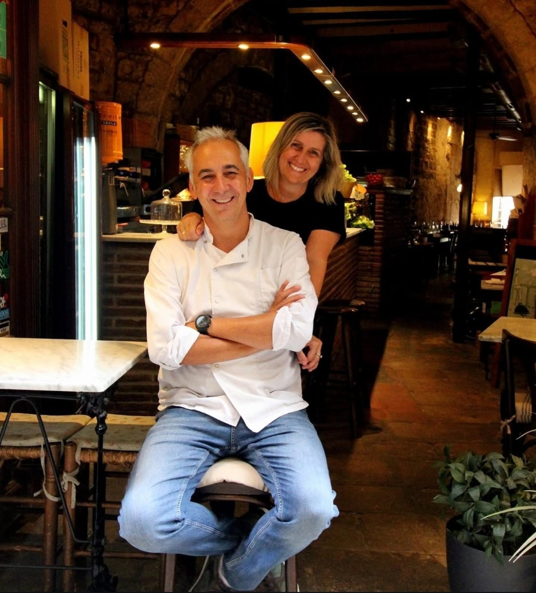
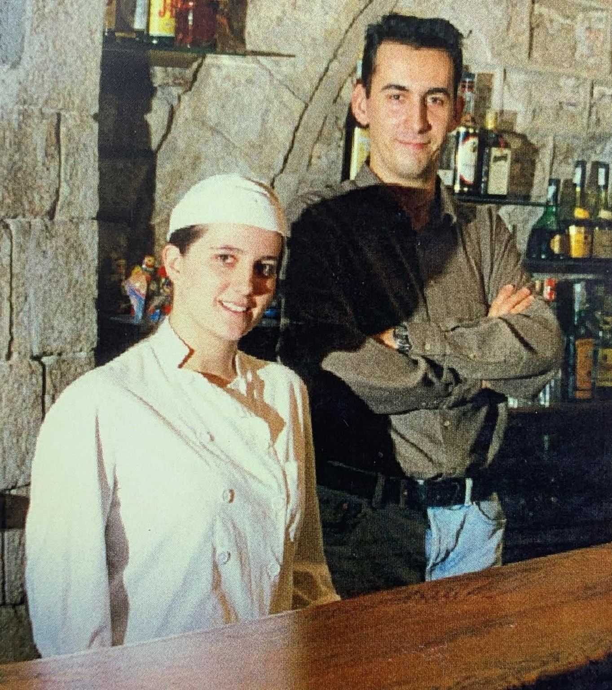

Coques
de recapte
Pebrot · albergínia · sobrassada · figues · arengades
Producte de qualitat, receptes amb arrel i una manera propera d'entendre l'hospitalitat, al cor del Gòtic.
Benvinguts a L'Antic Bocoi del Gòtic, un espai acollidor on la cuina catalana i el producte de qualitat són els protagonistes.
Ingredients frescos de primera qualitat, una preparació senzilla i acurada i respecte pel gust de cada producte.

Un restaurant també és la gent que el fa possible. La cuina, la sala, les converses i els anys compartits formen part de l'experiència.
A L'Antic Bocoi, la tradició és també una manera de fer, de rebre i de cuidar els detalls.

“Amb els anys, la passió per la cuina i l'hospitalitat continua.”
Ingredients frescos de primera qualitat, preparats amb senzillesa i cura per conservar tot el seu gust.
Pebrot · albergínia · sobrassada · figues · arengades
Salmó · foie-gras · parmesà · ceps
Productes de qualitat i petits productors
Per acabar l'àpat amb aquell toc fet a casa
Entre pedra, fusta i llum càlida, el Gòtic posa el marc i nosaltres ens ocupem de la resta.
ADREÇABaixada de Viladecols, 3
08002 Barcelona
TELÈFON933 10 50 67
HORARI19:00 — 23:00
Reservar per telèfon